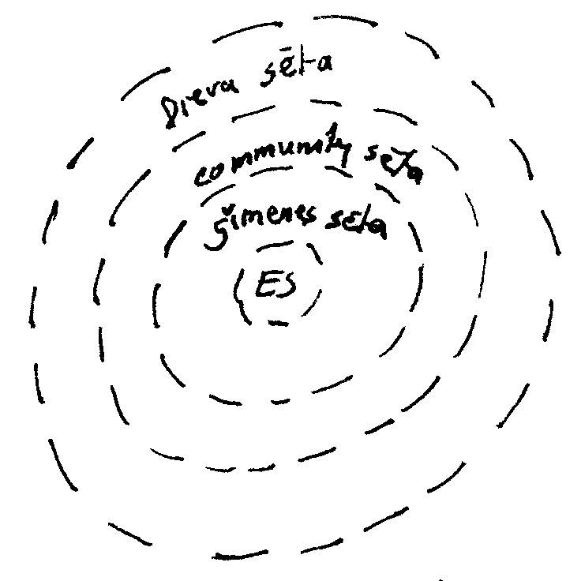
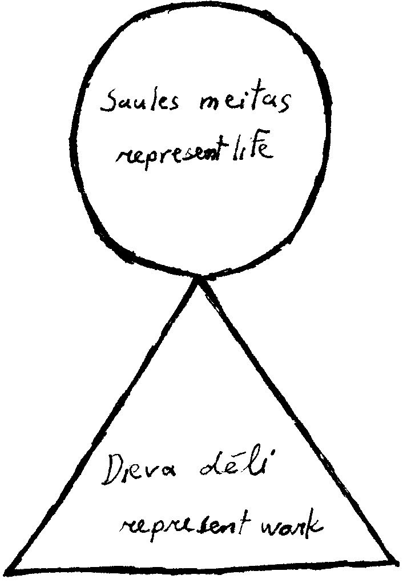

|
Sēta
Definitions
- Sēta [fence. Fenced in.]
- All property and people within the fence.
Dieva sēta, pilsēta, lauku/māja sēta
- Dieva sēta.
- Symbol of roof over everything.
- Pilsēta [pil (castle), sēta (fence)]
- Are legal/political entities.
- Lauku/ māja sēta [lauku (country), māja (home), sēta (fence)]
- The smaller entities are chips off the old block. Mathematically smaller fractal components, of the identical larger composition.
- Saime
- a specific demographic of people
- Saimnieks
- the male leader of a sēta
-
- Saimniece
- the female leader of a sēta
- Ģimeme
- one family unit
How to define your psyche as components within sēta
In Latvian folklore, it is useful to think of your psyche, or esma, as a family unit (ģimene). The different personalities and roles within a family sēta [fence], are as your own psyche. When everyone lives in harmony within a family structure, all is well. When everything is balanced within your esam, all is well.
We are all born into a ģimene, albeit rarely all the members of our biological family exist physically, and even if everyone is present, they will never idealistically complete their roles as you depend on them as a child, or as an adult either.
Is this a problem? Not at all. There are 3 solutions:
-
Rollplay: We can place roles to different people within our family. Maybe your dad actually behaves like a mother, your sister like a dad, and your mother like a pamāte. So what is missing in your spiritual essence of family is your sister and brother. You look to the community to find people to play those roles. If you cannot find anyone there, you look one step up -> #2
- Sēta structure: According to the „sēta” structure, you can always move up a level (lauku sēta, pilsēta – community; Dieva sēta) to get advice and support we need.
- Daba [nature]: The easiest to understand and always accessible: just look out your window. Most dainas compare balance (or unbalance) in nature, to balance (un-balance) in your environment, ģimene, or own esmu [psyche]. So daba can fill in the gaps in your ģimene environment. In folklore, elements of nature are described as sparkling, and therefore are alive (even rocks, mountains..). We are often reminded that this sparkling is directed to us if our free-will is receptive to it. So we are always loved by nature itself.
Permeable and non-permeable sētas
- Hierarchies with non-permeable sētas (borders) are economic and political structures.
- Hierarchies with permeable sētas (borders) are spiritual structures.
The Latvian language distinguishes between these two structures:
- Example: Vaira Vīķe-Frieberga
- Vaira Vīķe (maiden name)
- Vaira Vīķe-Freiberga (name as united with Freiberga sēta)
- Dr. Vaira Vīķe-Freiberga (scholarly hierarchical name)
- Presidentes Kundze (political hierarchical name)
- Non-permeable sētas as political hierarchies:
- In the political non-permeable hierarchy, she is a valdiniece [ruler] in valdība [government] of valsts [country]. Note that Latvian language uses same root to describe associations within the political non-permeable hierarchy. Because this is non-permeable, it needs to be guarded, so no undesirables get in. A job historically for karavīri [war men (warriors)]; but in times of peace, its a job for lawyers. Order within the non-permeable hierarchy is for police (mini-warriors) and lawyers.
- Permeable sētas as psycho-social hierarchies:
- A non-permeable hierarchical social system means that each „sēta” is a separate identity, the same as a permeable hierarchical social system. Within a non-permeable sēta, things are horded, and not shared by default. Sharing is strictly controlled by a select few. That’s why lawyers and warriors are needed to guard the sēta. A permeable sēta, means that things are shared without need for higher consultation. Things are borrowed, not horded. Hence Vaira Vīķe-Freiberga will never be called „Latvijas saimniece” within the realm of politics, but within the realm of our own spiritual world, it could be a valid statement.
To survive in this world on a business basis, we have to conform to the non-permeable sēta as all our political-economic structures are based on this form. To survive in this world as healthy human spirits, it is believed that we are healthiest, and hence most efficacious, when conforming to the permeable sēta.
Permeable and non-permeable sētas in Latvian folklore:
The large bulk of Latvian folklore is about the non-permeable sēta of the human psyche and its interaction with the world.
There are some war songs and folk epics about war in Latvian folklore as well. These are historically quite new as there are strong references to other cultural and religious symbols of war. They describe the non-permeable sēta, with all its consequential social patterns of heroes, worshiping ideals, ceremonies, awards and monuments. In contrast, none of these social patterns are present in the permeable sēta, describing our psyche. It doesn’t make sense. Your saulīte does not need a reward. It always shines, irregardless.
In summary, older dainas using the permeable sēta, explain war as sad. The men leave, and when they come back, everything has changed. The newer dainas using the non-permeable sēta describe war-heroes. War is celebrated.
In our daily lives, you will notice that many times people impose idealistic non-permeable sēta around a model of a psyche. This backfires. People usually like the standardized organization of business matters, but don’t try to control their brain.

Permeable Dieva sēta
|
Non-permeable legal (likuma) sēta |
Members, Components of Sētas in Latvian Folklore
The cast of ģimene sēta (family)
These figures are personifications of human psyche. They are not to be taken literally.
- Māte [mother]
- Key. The person you depend on and trust with your life.
- She is often referred to in diminutive(māmiņa, māmulite, mamukiņš...) as this stresses the importance of her saulīte.
- Words describing māte: balta, laba, skaista, maiga, mīļa.
- If you do not have someone in your life who plays the „māte” role, there are problems. It is imperative that you find spiritual resources to replace this gap. If spiritually you do not feel a māte in you life, your pfft. Luckily, the dainas are filled with support.
- Pamāte [step mother]
- This is the mother from hell (so to speak).
- This is troubling. You are scared of this person you depend on.
- „Pa” [step]
- Any character who is trouble is given the „step” prefix.
- Example: A stepdaughter (pameita) could be the spoiled brat, but her corresponding stepmother could be very nice, and therefore is given the name „māte”, not „pamāte”.
- Vecmāte [old mother (grandmother)]
- Always nice, patient and able to spend time with you and able to give you a hug.
- She is often called in diminutive (vecmāmiņa)
- Vectēvs [old father (grandfather)]
- Nice person, always able to give you practical advice.
- Old people
- Positive connotations:
- When addressed in diminutive (sirmīte, vecīte, vecmāmīte, vectētiņš...)
- Highly regarded.
- If lead a balanced life, old people will give away all the gifts they received throughout life before they pass on – material, important knowledge, burvestība (magical). Why? In a permeable sēta, all is borrowed, not horded. It is to be used with appreciation, and returned to giver if possible, or passed on.
- Negative connotations:
- Addressed as krupis, or other word describing a bent over, falling object.
- It describes anyone who can’t function. When dysfunctional, even physically young people could be given a slang name of an old person.
- Tēvs [father]
- The protector of the sēta.
- Maintains order within sēta. (Does punishments for misbehavior.)
- Does heavy work (stiepšana) and is well-mannered (laipnība)
- Names describing tēvs: dižozols, stiprs
- Māsa [sister]
- Always working: house chores, schoolwork, knitting, field/garden work.
- Brālis [brother]
- When he works, he does good work.
- Often taking a break, playing games, especially provoking sister.
- Fantasize of making the world a better place, while immediate surroundings are not priority.
- Esmu / Es [the general psyche]
- Much dainas refer to „Es” when describing the psyche. i.e. The writer/singer of the song is not referring to personal experience, but to psychological experiences as a whole.
- The ideal psyche is believed to be one that is balanced: saderēta [everything fits together]. The traits of the adult psyche encompass all members of the „es” ģimene:-māte, tēvs, māsa, brālis, vectēvs, vecmāte – as described above.
- Example: A real father would definitely have some „māte psyche tenderness” in him, otherwise no one would want to be near him, yet alone marry him. A real mother would not just watch a child put her hand on a hot stove. She would set rules, and get angry is the child disobeyed, which is part of the „tēvs psyche”.
- Es [yourself]
- Make note of what part of the „ģimene psyche” you already have in your own.
- (Eg. You may be some brālis, a little māsa and vectēvs)
- Then fill in the gaps starting with the ones closest to you in your mājas sēta. Then look in to the community sēta, and finally Dieva sēta if you have to.
- (eg. In the example above, you need a māte, tēvs, vecmāte)
- Bārenīte [orphan]
- We all feel like a bārenīte at some point. Loneliness, fear, disorientation, despair. No one to talk with. Latvian folklore regards bārenītes highly. Clearly, being without all resources is stressful and unfair, but it is believed that it is this pain that motivates us to grow as beings. (Although many get caught in self-pity and anger instead). The bārenīte has many spiritual resources, by observing nature, or by moving within the permeable Dieva sēta.
- Kalpone(is) [servant]
- Household run by servants, which are usually Bārenītes.
- Ganiņš [sheppard]
- These are children who are removed from family sēta to work. A loving family may exist, but is not accessible, therefore is is psychologically same as bārenīte [orphan].
Summary
The ģimene analogy if the psyche is just a learning tool to understand your own personality. Your personality structure, strengths and weaknesses. It gives you solutions on where to go to fill in the gaps, so you are as well-balanced – saderēta – as possible.
Cast of Saules Ģimene Sēta [Sun’s family fence]
-
Father, mother, brothers, sisters who come to visit.
- Has daughters, son’s, daughter-in-law. Daughters [Saules meitas] are most important.
- Household run by servants, both male and female.
From this structure we see that the Dieva sēta goes on indefinitely. There is no beginning of time or space. The esma in the present is structured as the esmas of past, and the esmas of the future.
Dieva Sēta [god’s fence]
This is the community Saules ģimene, and all the rest of the universe, including ourselves, live in.
Definitions
- Dievs [God]
- Visuma [the whole thing. Dievs]
- Dieviņi [Dievs in diminutive plural. Ar parts of dievs]
- A „whole” is comprised of „parts”, so that’s how the universe is described: „parts of the whole”.
The cast of Dievs:
Saule
- Saules meitas
- Laima
- Māra
- Māras meitas (Lieldiena & 3 sisters)
- Mātes (approximately 67 including Veļu māte of Veļu valsts)
- Representation through nature (plants and animals)
- Dieva dēli
- Overall tools and work functions: Pērkons, Jānis
- Seasonal work functions: Metenis, Ūsiņš, Jānis, Miķelis, Mārtiņš, 4 brothers Ziemassvētki
- Other workers: Auseklis, Zvaigznes, Sietiņš
- Representation through nature: Jumis, Pēteris, Jēkabs, ... plants and animals
All these parts of Dievs (dieviņi) help us understand the universe and its resources.
(Explained in detail later.)
Saderēšana of Dievs
The 2 main divisions: Saules meitas and Dieva dēli
- Saule and its parts are the essence of life in various forms (represented by circle).
- Dieva dēli are the tools and working skills required to nurture life (represented by triangle).
- The male roles are listed under Dieva dēli. They all have practical work functions.
- The female roles are listed under Saule.
- Saule also has 2 other female entities, Laima and Māra. Māra is the goddess of all things on earth. More specific functions are handled by Mātes [mothers]. Laima is the goddess of luck. She helps bring together all the parts of dieva Visuma.<.li>
Ancient story of sun:
-
Images of the marriage of Saules meitas [sun’s daughters] and Dieva dēli [God’s sons]. (Not to be understood literally; are principles)
- Explains our primary motive to grow. To grow, life essence (Saule) has to be nurtured by appropriate work (Dieva dēli). Applies to ourselves and the universe.
- Specifically, saules meitas [sun’s daughters] are described as rays of light. They marry Dieva dēli [god’s sons] which are described as workers of the land or other natural phenomenon.
This symbol of dievs as a circle over triangle, joined in marriage, yet still identifiable separate. The symbol is ourselves, our relation with loved ones, and how the universe is spiritually structured, This implies that unconditional acts of giving and courage are indeed our own liktenis [free will], as we all have a piece of dievs inside us. Latvians would not say „what an angel” or „he was touched by god”, as there is no separation between humans and gods.

SSS2004 Home
|